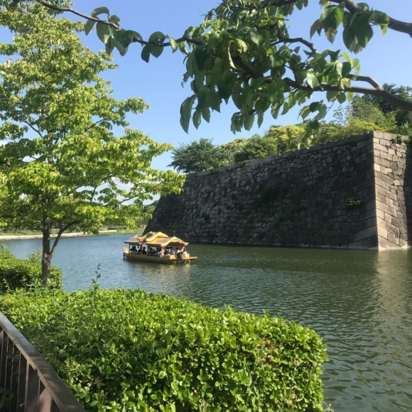
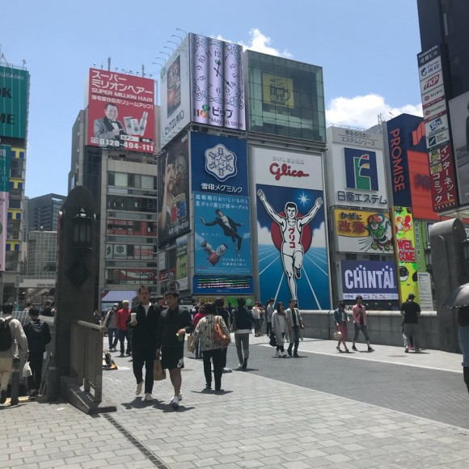
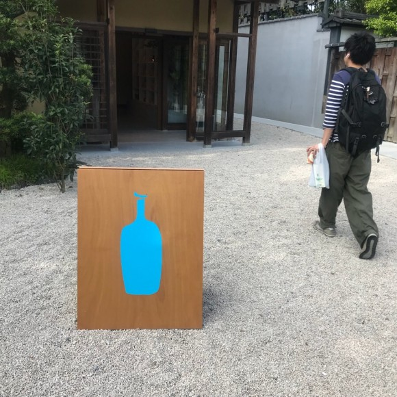
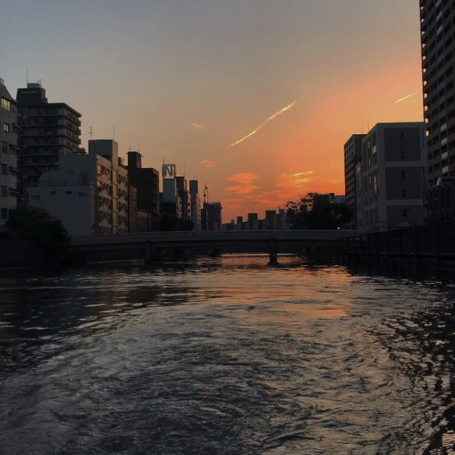
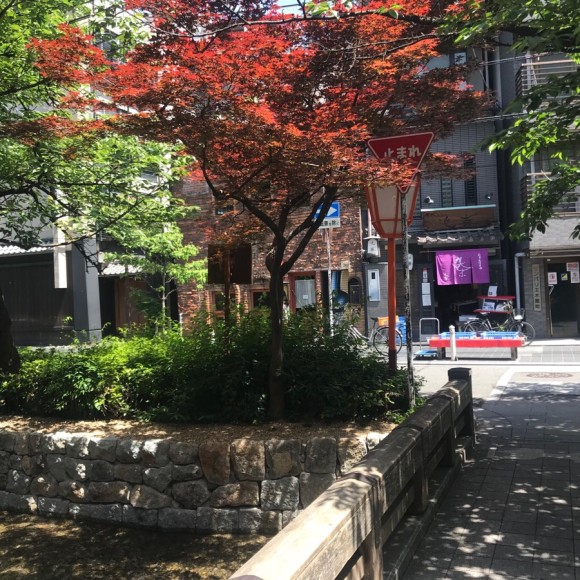
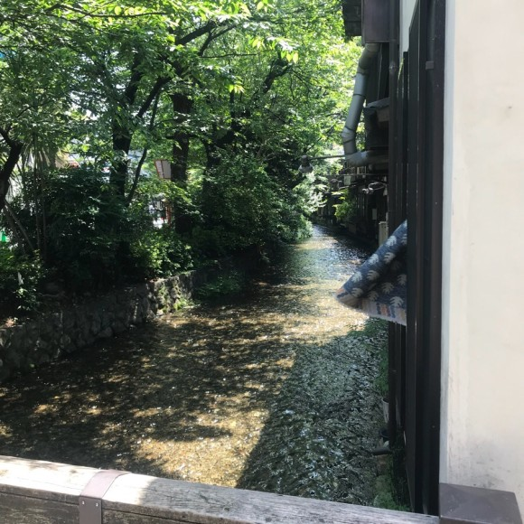
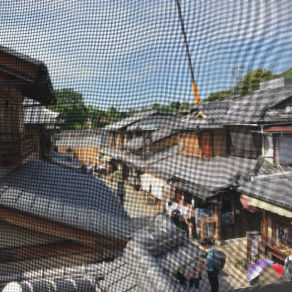
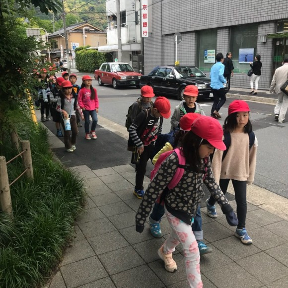

15W-15E
30E-60E
90E-110E
120E-150E
Tips
Central Asia
, Osaka
Toyko
Osaka
Fukuoka
Shanghai
첫 일본 여행지였던 오사카
17살 때 처음으로 언니와 단둘이 간 해외여행지 오사카
Osaka
   
여행에는 날씨가 중요하다는 것을 알게해준 오사카
Kyoto
   
오사카보다 더 좋았던 근교 교토.
햇살에 반사되는 초록빛이 예뻤던 곳